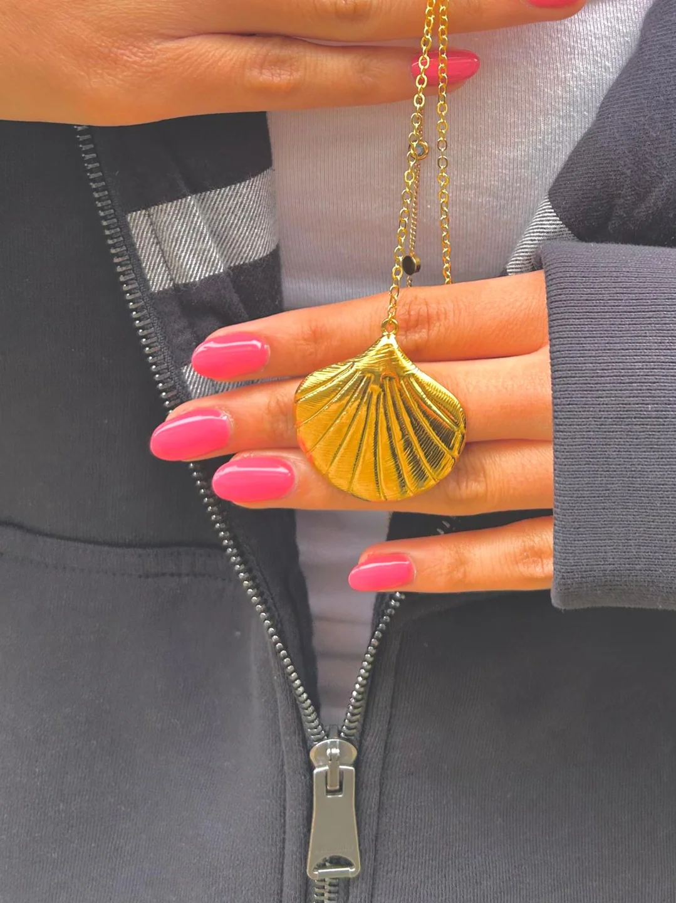
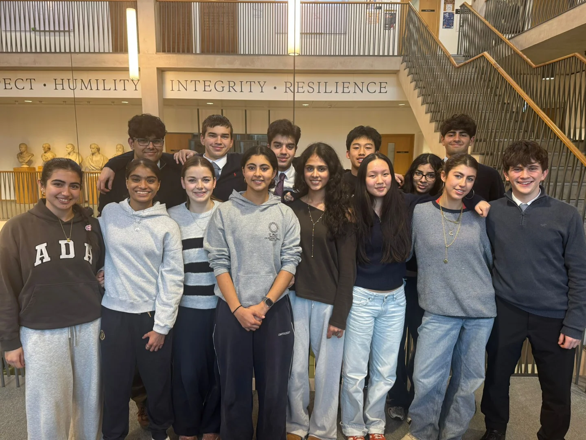

Avani Jewels.
Building a business with purpose.
Digital and Technology Director. I directed digital strategy for Avani Jewels, a 15-person student-run jewellery company. Our team achieved £1,121.39 in total profit and received the Sustainability Award at the North & South London Finals.
Pitching Avani Jewels.
Footage from our team's enterprise presentation.
Strategy, products and the pitch.
Building a company combined individual responsibility with decisions taken together by our team.

Example item of jewellery sold · gold seashell pendant
Avani Jewels · student company team photographDeveloping a student-led jewellery company.
Avani Jewels created jewellery products as part of the Young Enterprise programme. The collection included sea-inspired necklaces and delicate pendants, presented through product displays and customer-facing events.
My role was to direct the company’s digital strategy while collaborating across a team of 15.
Turning teamwork into measurable results.
The company recorded £1,121.39 in profits and won a Sustainability Award at the North & South London Finals. Alongside the commercial experience, the project developed my communication and team-leadership skills.